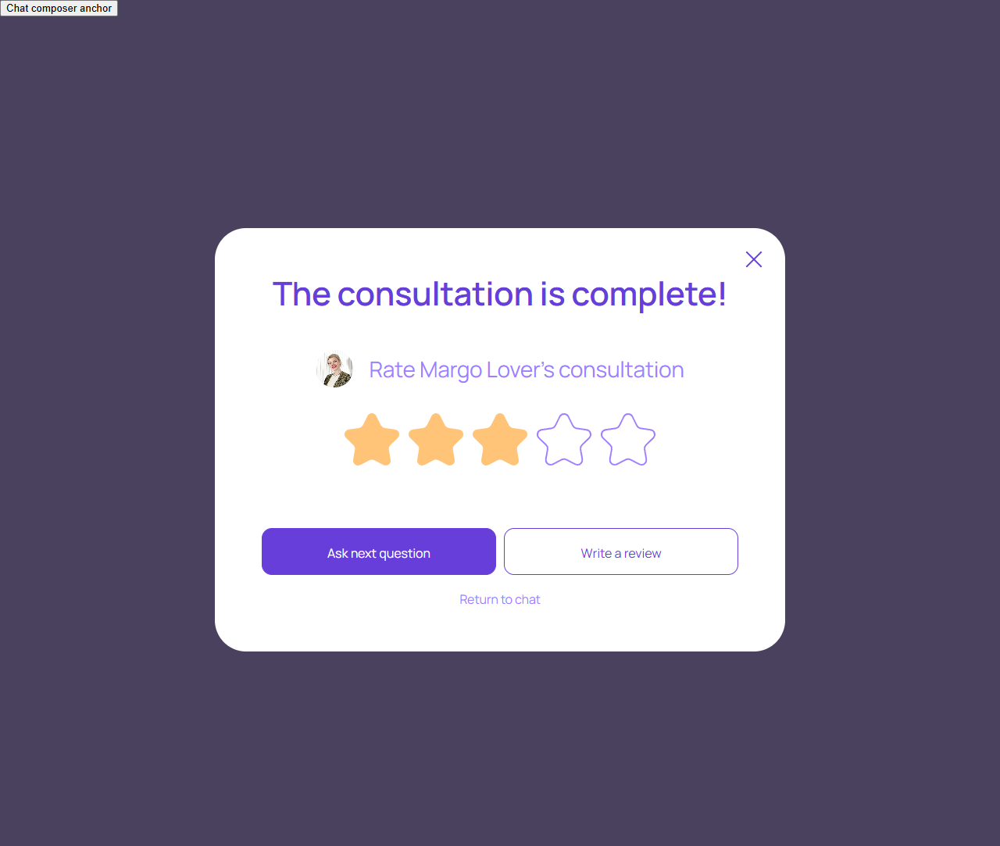
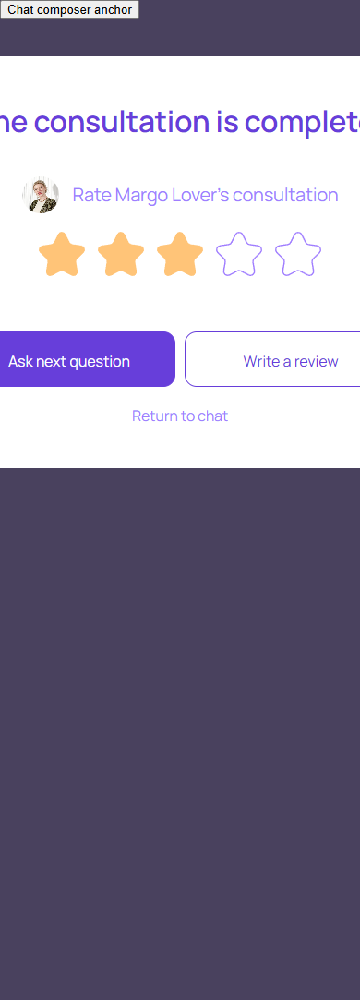

Консультация завершена
account/consultation-completed.html
Показать итог и следующие действия.
| Когда открывается | Сервер подтвердил Complete |
|---|---|
| Данные | sessionId; длительность; окончательное списание; eligibility отзыва. |
| Сценарий | Звезды заполняют оценку; Write review → форма; Ask next → новая консультация в прежнем диалоге, не возобновление завершенной. |
| Переходы | Отзыв о консультации · Вопрос перед консультацией · Постоянный диалог |
Общая и предметная логика. Снимки и подписи элементов — исходная редакция макета; поздние уточнения ТЗ имеют приоритет в своей области. Это не проверка текущего сайта.
Состояние 1280 · 1280 × 1083


Элементы и ожидаемые действия
| Элемент | Название в макете | Действие | Ожидаемый результат |
|---|---|---|---|
| E001 Виден | Chat composer anchor | Информационный блок/область фокуса, не самостоятельная команда. | Показывать актуальные данные соответствующего сценария; фокус или чтение не выполняют мутацию. |
| E002 Виден | Close completed consultation | Закрыть локальное окно или вернуться к инициатору; Stay отменяет намерение завершить. | Вернуть фокус и исходный контекст. Не выполнять оплату, удаление или Complete. При неизвестном результате платежа сначала сверить заказ. |
| E003 Виден | 1 out of 5 | Выбрать оценку 1–5 для завершенной собственной консультации. | Выбор звезды — черновик; публикация только после Send и проверки уникальности отзыва. |
| E004 Виден | 2 out of 5 | Выбрать оценку 1–5 для завершенной собственной консультации. | Выбор звезды — черновик; публикация только после Send и проверки уникальности отзыва. |
| E005 Виден | 3 out of 5 | Выбрать оценку 1–5 для завершенной собственной консультации. | Выбор звезды — черновик; публикация только после Send и проверки уникальности отзыва. |
| E006 Виден | 4 out of 5 | Выбрать оценку 1–5 для завершенной собственной консультации. | Выбор звезды — черновик; публикация только после Send и проверки уникальности отзыва. |
| E007 Виден | 5 out of 5 | Выбрать оценку 1–5 для завершенной собственной консультации. | Выбор звезды — черновик; публикация только после Send и проверки уникальности отзыва. |
| E008 Виден | Ask next question | Продолжить сценарий «Консультация завершена»: Звезды заполняют оценку; Write review → форма; Ask next → новая консультация в прежнем диалоге, не возобновление завершенной. | Сохраняются expertId/dialogId; вопрос, согласие, funding и operator Start не объединяются. Нажатие само не запускает платное время. |
| E009 Виден | Write a review | Открыть отзыв для текущей завершенной консультации. | Передать sessionId/expertId и eligibility; не создавать отзыв при открытии. |
| E010 Виден | Return to chat | Закрыть локальное окно или вернуться к инициатору; Stay отменяет намерение завершить. | Вернуть фокус и исходный контекст. Не выполнять оплату, удаление или Complete. При неизвестном результате платежа сначала сверить заказ. |
Состояние 390 · 390 × 1083


Элементы и ожидаемые действия
| Элемент | Название в макете | Действие | Ожидаемый результат |
|---|---|---|---|
| E001 Виден | Chat composer anchor | Информационный блок/область фокуса, не самостоятельная команда. | Показывать актуальные данные соответствующего сценария; фокус или чтение не выполняют мутацию. |
| E002 Виден | Close completed consultation | Закрыть локальное окно или вернуться к инициатору; Stay отменяет намерение завершить. | Вернуть фокус и исходный контекст. Не выполнять оплату, удаление или Complete. При неизвестном результате платежа сначала сверить заказ. |
| E003 Виден | 1 out of 5 | Выбрать оценку 1–5 для завершенной собственной консультации. | Выбор звезды — черновик; публикация только после Send и проверки уникальности отзыва. |
| E004 Виден | 2 out of 5 | Выбрать оценку 1–5 для завершенной собственной консультации. | Выбор звезды — черновик; публикация только после Send и проверки уникальности отзыва. |
| E005 Виден | 3 out of 5 | Выбрать оценку 1–5 для завершенной собственной консультации. | Выбор звезды — черновик; публикация только после Send и проверки уникальности отзыва. |
| E006 Виден | 4 out of 5 | Выбрать оценку 1–5 для завершенной собственной консультации. | Выбор звезды — черновик; публикация только после Send и проверки уникальности отзыва. |
| E007 Виден | 5 out of 5 | Выбрать оценку 1–5 для завершенной собственной консультации. | Выбор звезды — черновик; публикация только после Send и проверки уникальности отзыва. |
| E008 Виден | Ask next question | Продолжить сценарий «Консультация завершена»: Звезды заполняют оценку; Write review → форма; Ask next → новая консультация в прежнем диалоге, не возобновление завершенной. | Сохраняются expertId/dialogId; вопрос, согласие, funding и operator Start не объединяются. Нажатие само не запускает платное время. |
| E009 Виден | Write a review | Открыть отзыв для текущей завершенной консультации. | Передать sessionId/expertId и eligibility; не создавать отзыв при открытии. |
| E010 Виден | Return to chat | Закрыть локальное окно или вернуться к инициатору; Stay отменяет намерение завершить. | Вернуть фокус и исходный контекст. Не выполнять оплату, удаление или Complete. При неизвестном результате платежа сначала сверить заказ. |